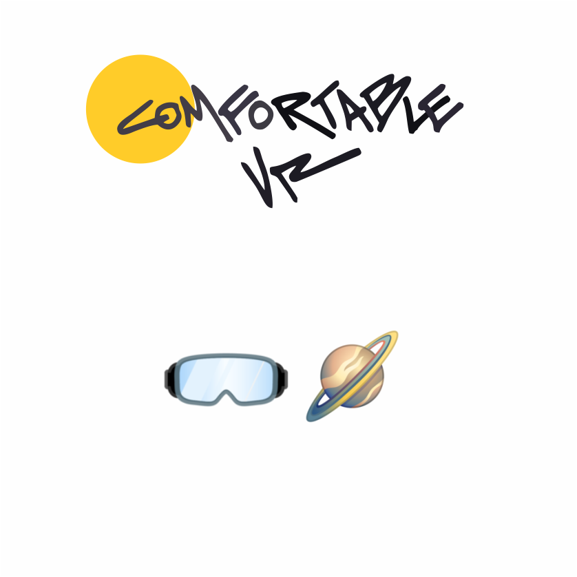

Interaction Design for Gen AIConversational UIDesign Lead
Conversational Gen AI for tax and accounting professionals
Role: Senior Product Designer · Core team

Outlook's CortanaConversational AI Interaction SystemsComplex prototyping
Assistive AI Experiences for Cortana, Outlook and Copilot
Role: Product Designer

Interaction Design for Gen AISystemic Thinking
How to implement Gen AI into a Design Process: The error-handling framework for CoCounsel Tax & Audit
Role: Senior Product Designer · Core team

GUI ArchitectureMassive user base
Productivity AI-Powered Features for Microsoft Edge & Windows 11
Role: Product Designer

Multi-modal System ArchitectureConversational UIOutcome-Based Roadmapping
A modular system for e-commerce
Role: Product & Interaction Design Team Lead

Label
(WIP)
WIP
